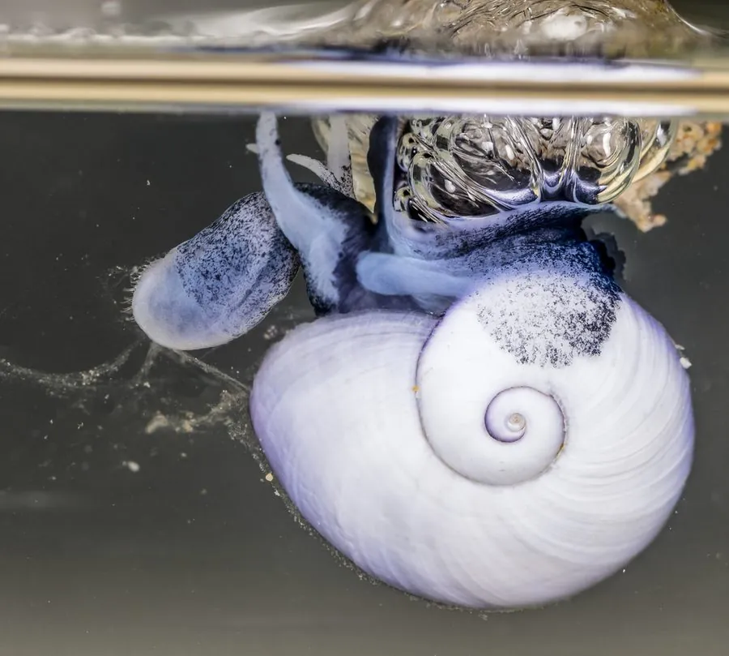

软体动物 · 动物界
海蜗牛 Janthina janthina

漂在海面上的紫色小螺，用黏液做成一个浮筏托住身体，随风和洋流四处漂行，以水母和帆水母为食。
- 分类
- 门软体动物门纲腹足纲目中腹足目科海蜗牛科属海蜗牛属
- 栖息环境
- 开阔海面表层，随洋流和风漂浮
- 地理分布
- 全球热带和温带的温暖海域，包括大西洋、太平洋和印度洋
- 保护级别
- 尚无保护级别；种群受海洋塑料污染和洋流变化影响
物种志
海蜗牛是一种小型海螺，壳径约两至三厘米，壳质薄而脆，呈圆锥形，壳面紫罗兰色至深紫色，螺层低矮，壳口宽大，口盖退化。它的足部能分泌黏液，把气泡包裹起来，做成一个透明的浮筏，挂在身体下方，使它能够漂浮在海面。身体呈紫蓝色，与壳色相配。雌雄同体，异体受精。它不能主动游泳，只能靠风和洋流漂行，常被冲上海滩。
它广泛分布于全球热带和温带的温暖海域，包括大西洋、太平洋和印度洋，栖息在开阔海面的表层，常成群漂浮。它主要以帆水母、银币水母等浮游腔肠动物为食，用齿舌和颚刮食水母的组织。它的浮筏能托住卵囊，卵孵化后幼体随洋流扩散。海蜗牛是少有的一生漂浮在海面的螺类，常被海流冲上沙滩，颜色鲜艳，容易被误认为塑料碎片。目前尚无保护级别，种群受海洋塑料污染和洋流变化影响。
形态与习性
- 食性以帆水母、银币水母等浮游腔肠动物为食
- 壳径约两至三厘米，壳薄呈紫色
- 浮筏分泌黏液包裹气泡，制成透明浮筏
- 运动不能主动游泳，靠风和洋流漂行
- 繁殖雌雄同体，浮筏下方托住卵囊
- 分布全球热带和温带海面，常被冲上沙滩
趣味知识
- 海蜗牛用黏液把气泡粘成一个浮筏，自己倒挂在下面漂在海面上。
- 它的壳是鲜艳的紫罗兰色，被冲上沙滩时常被误认成塑料碎片。
- 它专门吃帆水母等漂浮的腔肠动物，是少数营漂浮生活的螺类。